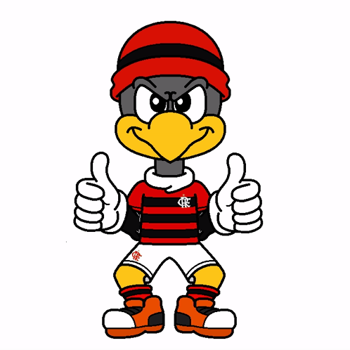

Filipe Luís pode se tornar o técnico mais vitorioso do Flamengo
Filipe Luís tem pouco mais de um ano pelo Flamengo como treinador, técnico mais vitorioso da história do clube.

Flamengo bate Madureira em semifinal com vaias e marca histórica de Arrasca
O Flamengo venceu o Madureira por 3 a 0, hoje, no Maracanã, e abriu vantagem no jogo de ida das semifinais do Carioca

Torcida do Flamengo protesta no Maracanã: "Time sem vergonha"
Torcedores mostraram insatisfação com resultados neste início da temporada, sendo o mais recente a derrota para o Lanús na Recopa, e vaiaram a equipe antes de enfrentar o Madureira
